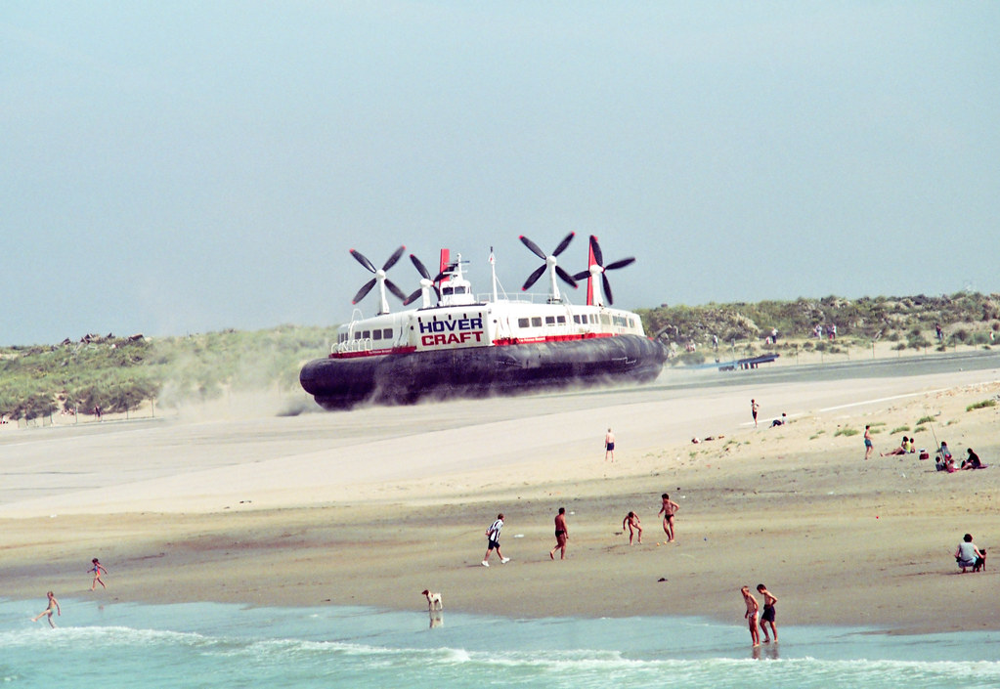
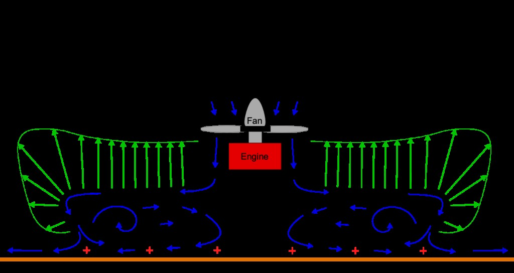
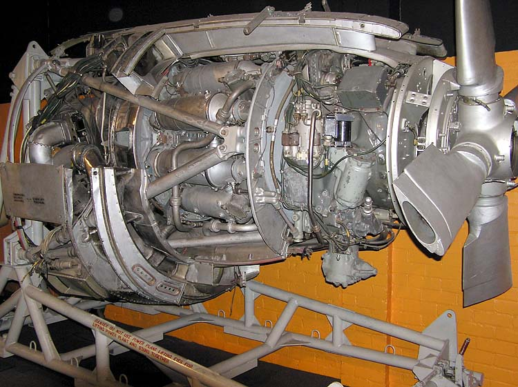
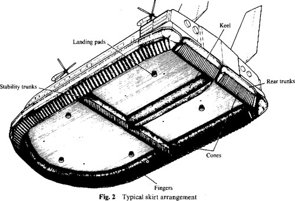
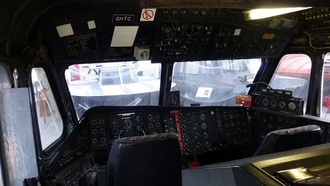
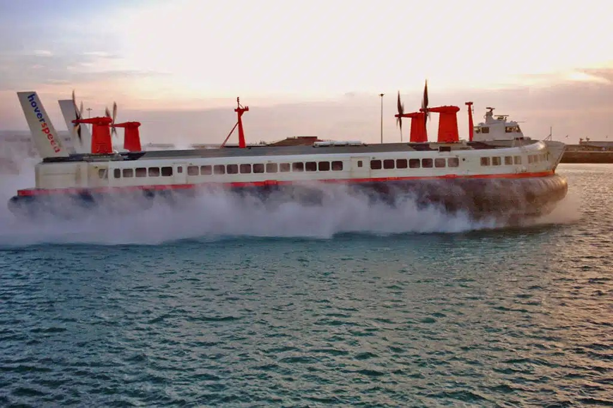

ENG0018 Computer Laboratory
Student URN: 6917368
Conference paper: Why did Large Hovercraft become obselete?
Table of contents |
|---|
AbstractIntroduction |
AnalysisLifting and propulsion System AnalysisStructure and Material AnalysisControllability AnalysisEconomic Analysis |
EvaluationReferences |
Abstract
This report examines the SR.N4 Air-Cushioned Vehicle (ACV) Giant Hovercraft to identify the key factors that lead to its obsolescence. The analysis will cover four core aspects: lift and propulsion generation, structural and material integrity, controllability, and economic viability. Findings will show that despite the SR.N4 representing a major technological achievement; it ultimately succumbed to 'basic economics: revenues, costs, and competition' (Shipyard, 2023, section: an obsolete future). The SR.N4 endures as a testament to British innovation and as demonstrates the technological limitations of the time.
Introduction
Hovercraft or air-cushioned vehicles (ACVs) operate on a cushion of air generated by downward. Patented by Sir Christopher Cockerell in 1955 (Britannica Editors, 2025, para. 5 ) and led to the deployment of the SR.N4 in 1968, the first large-scale hovercraft. Despite being innovative and having an impressive range of capabilities, it suffered from significant engineering inefficiencies (Mustard, 2022). This report examines the SR. N4's shortcomings to explain its current obsolescence.

The Princess Margaret SR.N4 Hovercraft in 1997 on the beach at Calais | Image source: David
Analysis
Lift and Propulsion System Analysis
The SR. N4 Christopher Cockerell 1955 peripheral jet principle, whereby a powerful, centrifugal fan would force air into a plenum chamber (a chamber designed to collect + distribute air), then around the hull, forming a momentum curtain: a high velocity air-curtain that trapped the air cushion below the belly of the hovercraft (James' Hovercraft Site, 2009, webpage: How a Hovercraft Works), generating lift for the hovercraft. A rubber skirt was also added to trap the air pocket, reduce drag and allow movement over various terrain types (Yun and Bliault, 2000, page 48).

Image source: (Embry-Riddle: Aeronautical University) - Ground Effect Vehicles – Introduction to Aerospace Flight Vehicles
Four giant Rolls-Royce Marine Proteus gas turbines produced approximately 11.3 Megawatts of power in total, giving the SR.N4 speeds of 65-70 knots and lifting up to 320 tonnes when it was fully loaded (British Aerospace, 1972; James Hovercraft Website, 2009, page: SR.N4 system tour).
Bristol Proteus engine at Bristol Industrial Museum, Bristol, England. | Image source: Adrian Pingstone
Despite giving the SR. N4 had an excellent performance; it was very fuel-inefficient as it burned over 35,563 liters of Kerosene per engine for one crossing (James' Hovercraft Website, 2009, page: SR.N4 system tour). In addition, due to being designed as aircraft engines, the gas turbines regularly ingested sea salt spray that eroded the turbines and caused cavitation (the formation and subsequent collapse of vapor bubbles that cause material degradation) in the propeller blades (Yun and Bliault, 2000, page 419). Furthermore, mechanical issues with the compressor and turbine blades, as well as the bearings failing at lower power settings (Stuart L. Slade, 2015, page 6), reduced overall reliability and increased maintenance costs and downtime (Mustard, 2022).
Structure and Material Analysis
The SR.N4's hull was constructed from an aluminium-clad alloy that minimized its weight to maintain its manoeuvrability and structural integrity (Yun Bliaut, 2000, page 7). The hull itself was robust enough to withstand harsh weather. The skirt was made from flexible nylon rubber and was heavily segmented, meaning if sections tore off, other sections would expand to fill the vacancy and maintain lift (Ian Brooks, 2012, sect: segmented skirts).
Figure 2 (diagram of the underside of a hovercraft's skirt) | Image source: R. Wheeler, A. Key, (1997), Hovercraft Skirt Design and Manufacture - as can be seen, the skirt was highly segmented into figures that would brush along terrain features, put were prone to shearing off it it interacts with rough terrain
The issue was that sections of the skirt had a short lifespan of only 300 operational hours (Dr E R Gardener and Mr J Morris, 1981, sect: High Speed Ferries), leading to constant skirt maintenance and replacement that further increased operating costs (Mustard, 2022).
Controllability Analysis
Operationally, the SR.N4s functioned much like a 1950s passenger jet: requiring a captain, navigator, flight engineer and 11 cabin crew members (Mustard, 2022). The elevated height of the flight deck provided poor visibility that was further diminished by mist and sea spray generated by the SR.N4's engines (Megaprojects, 2022). This meant pilots relied heavily on the navigator that used the navigation panel that consisted of a basic radio compass and short-range radar screens to maintain a general heading (James Hovercraft Site, 2009, page: SRN4 Mk III Cockpit). The limited radar range and high operating speeds made collision avoidance difficult, leading to several incidents, one of them fatal (Megaprojects, 2022).
SR.N4 Cockpit - Picture of The Hovercraft Museum, Lee-on-the-Solent; as can be seen in the image, the cockpit resembles more that on a traditional aircraft than a ship
The SR.N4's steering and thrust controls were highly sensitive, needing continuous manual adjustments in rough seas or strong winds (James Hovercraft Site, 2009, page: SRN4 Mk III Cockpit). Additionally, with no automated systems or feedback assistance, the crew faced a heavy and stressful workload during operations; factors that made the controls limited and primitive by today's standards.
Economic Analysis
The SR.N4's design had many mechanical and inherent design limitations that are exemplified in the constant repair and replacement of gearboxes, turbines, and skirt segments. This made operational delays and cancellations quite severe and lost the operators lots of money (The Shipyard, 2023, sect: An Obsolete Future). The low passenger count didn't cover costs despite charging premium prices; SR.N4s could only carry 418 passengers compared to 2,000 passengers onboard modern ferries (Swift, 2021, para. 7-8). By the 1980s, operators had already deemed the SR.N4 uneconomical and were looking to replace them with more economically sustainable alternatives as the new Catamarans that were introduced in the 1990s alongside the completion of the Channel Tunnel, driving the SR.N4 out of the market (The Tim Traveler, 2024 | The Shipyard, 2023, sect: An Obsolete Future).
Evaluation and Conclusion
The SR.N4 stemmed from a list of cumulative inefficiencies across all systems. Its aircraft-derived engines normally ingested a lot of air, but instead, ingested sea salt that accelerated engine corrosion while the skirt had a very limited lifespan; both required regular maintenance and replacement that was costly (Britannica Editors, 2009, para. 10). The consumption of 500 gallons of oil per crossing (Swift, 2021, para. 10) made operations very expensive and was exacerbated by the 1973-74 International Oil Crisis (Britannica Editors, 2009, para. 10). Ultimately, the SR.N4 was an over-engineered solution niche soon replaced by cheaper, more practical alternatives like the catamaran ferries and the Channel Tunnel (The Tim Traveller, 2024).
Mark III SR.N4 arriving in Dover on its last commercial flight October 2000 | Image: Andrew Berridge
Ambitious but economically unsustainable, the SR.N4 exceeded the practical economic capabilities of the era, but its material limitations, high fuel consumption and operational difficulty made it commercially unviable. Despite this, the SR.N4 represents a brilliant feat of marine engineering: a machine of technological brilliance constrained by economics and impracticability.
References
- Bliault, A. and Yun, L, (2000) Theory and Design of Air Cushion Craft. London: Butterworth-Heinemann. Available at: Bliault, A. and Yun, L, (2000) Theory and Design of Air Cushion Craft. London: Butterworth-Heinemann (Accessed: 21st October 2025)
- British Aerospace, (1972) Propping across the Channel. Aircraft Engineering and Aerospace Technology: An International Journal. Available at: British Aerospace, (1972) Propping across the Channel. Aircraft Engineering and Aerospace Technology: An International Journal (Accessed: 21st October 2025)
- James’ Hovercraft Site – Hoverwork (2009) British Hovercraft Corporation SR.N4 (Mountbatten Class). Available at: James’ Hovercraft Site – Hoverwork (2009) British Hovercraft Corporation SR.N4 (Mountbatten Class (Accessed: 21st October 2025)
- Swift Half (2021). Lost at Sea? Why Did the Last Hover Giants Glide into History? Available at: Swift Half (2021). Lost at Sea? Why Did the Last Hover Giants Glide into History? (Accessed: 21st October 2025)
- The Shipyard (2023). What happened to Britain’s passenger hovercraft? Available at: The Shipyard (2023). What happened to Britain’s passenger hovercraft? (Accessed: 5th November 2025)
- Stuart L. Slade (2015) Competing manufacturer of Marine Gas Turbines – A Special Descriptive Market Analysis. Available at: Stuart L. Slade (2015) Competing manufacturer of Marine Gas Turbines – A Special Descriptive Market Analysis. (Accessed: 5th November 2025)
- Mustard (2022). What happened to Giant Hovercraft? Available at: Mustard (2022). What happened to Giant Hovercraft? (Accessed: 20th October 2025)
- The Tim Traveller (2024) The Last Surviving Giant Passenger Hovercraft. Available at: The Tim Traveller (2024) The Last Surviving Giant Passenger Hovercraft. (Accessed: 8th November 2025)
- Britannica Editors (2025) Hovercraft Vehicle. Available at: Britannica Editors (2025) Hovercraft Vehicle. (Accessed: 8th November 2025)
- Dr E R Gardener and Mr J Morris – Third International Hovercraft Conference (1981) Hovercraft Skirt Materials. Available at: Dr E R Gardener and Mr J Morris – Third International Hovercraft Conference (1981) Hovercraft Skirt Materials. (Accessed: 12th November 2025)